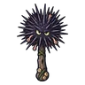

เม่นทะเลแตกตัว
มอนธาตุน้ำ Lv 84–91
เจอที่
| แมพ | โซน | Lv | ภูมิภาค |
|---|---|---|---|
| แนวหินโสโครก | 84–89 | ที่ราบสูง | |
| แนวหินโสโครก | หินโสโครกใหญ่ | 89–91 | ที่ราบสูง |
ค่าสถานะตามเลเวล
| Lv | HP | ATK | DEF | MDEF | EXP | Job |
|---|---|---|---|---|---|---|
| 84 | 69,368 | 168–251 | 30 | 18 | 80 | 60 |
| 87 | 76,992 | 175–263 | 31 | 18 | 83 | 62 |
| 91 | 87,689 | 186–279 | 33 | 19 | 86 | 65 |
ตีด้วยธาตุไหนดี
แรงขึ้น: ลม ×1.75
เบาลง: ไฟ ×0.5 น้ำ ×0.25
วัตถุดิบที่ดรอป
| ของ | โอกาส | |
|---|---|---|
| หนามเม่นทะเล | 55% | 1 ชิ้น (15% ได้ 2) |
อุปกรณ์ที่ดรอป (1)
| ของ | โอกาส |
|---|---|
 กระบองเม่นทะเล | 0.06% |
สกิล
ยิงไกล (Lv 25+) · ยิงไกล (Lv 60+) · พ่น (Lv 60+)